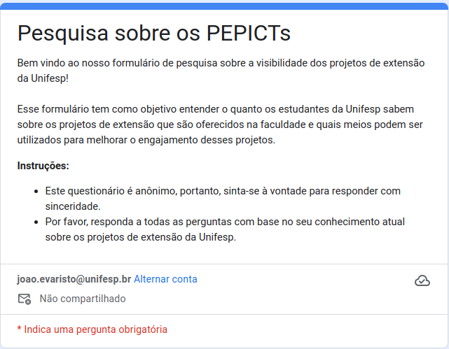

O propósito deste projeto é buscar uma solução para a falta de divulgação e baixa adesão de participantes ao programa PEPICT Inovação Tecnológica e Industrialização Sustentável, conforme identificado pela orientadora responsável Thaína Tosta. Nesse contexto, buscaremos aplicar os conhecimentos adquiridos durante a disciplina para encontrar soluções eficazes.
O projeto passará por todas as fases do processo de Design Centrado no Usuário, sendo eles:
Nesta fase, deveríamos escolher duas das técnicas de investigação discutidas em sala de aula para compreender os problemas e as necessidades dos estudantes em relação ao PEPICT.
O grupo decidiu realizar uma Análise de Erros e, posteriormente, um Questionário.
A Análise de Erros é uma técnica que consiste em analisar os erros cometidos pelos usuários durante a utilização de um sistema. Nesse contexto, o grupo optou por coletar os relatos de navegação de cada um dos integrantes durante a busca por informações sobre o PEPICT. Ao final, a equipe se reuniu para discutir as experiências individuais e quais foram os principais problemas comuns encontrados.
A partir da análise, foi possível identificar os seguintes problemas:
Falta de divulgação em meios comuns: o PEPICT não é divulgado em meios comuns, como redes sociais, e-mail institucional ou cartazes.
Dificuldade de encontrar resultados relevantes: pesquisas no Google com termos como “PEPICT”, “PEPICT Unifesp” ou "Programas de Extensão Unifesp" não retornam resultados relevantes.
Falta de informações: os sites que contém informações sobre o PEPICT não possuem informações suficientes para que o estudante entenda o que é o programa de fato, quais os projetos vinculados, como participar de um projeto integrante e como submeter trabalhos para o PEPICT.
Informações desatualizadas: os sites que contém informações sobre o PEPICT estão desatualizados, o que pode gerar confusão nos estudantes e falta de credibilidade das informações.
Informações descentralizadas: as poucas informações disponíveis sobre o PEPICT estão espalhadas em diversos sites, o que dificulta a busca por informações.
Um roteiro de navegação foi elaborado e pode ser acessado clicando aqui.
Com as informações coletadas na Análise de Erros, o grupo elaborou um questionário para coletar informações sobre a experiência dos estudantes com o PEPICT. O questionário era composto por um cabeçalho com informações sobre o contexto do projeto seguido de 7 questões.
OBS: O questionário foi divulgado em grupos de WhatsApp com o público-alvo, que são os estudantes da Unifesp.